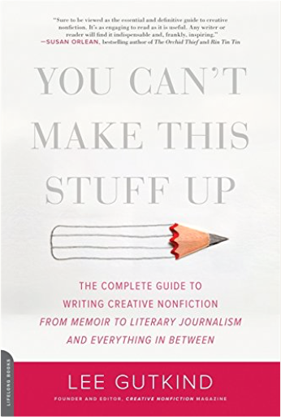
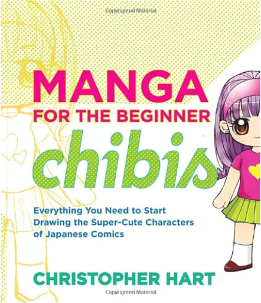
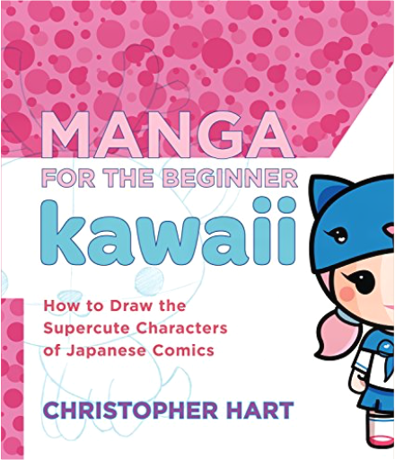
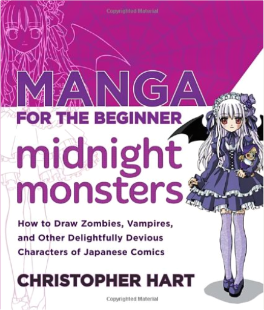
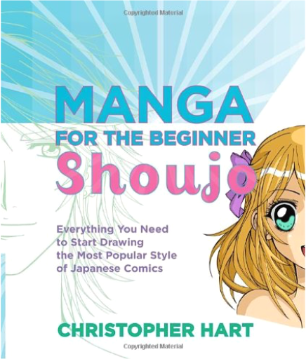

The Art of Non-Conformity: Set Your Own Rules, Live the Life You Want, and Change the WorldChris Guillebeau If you've ever thought, "There must be more to life than this," The Art of Non-Conformity is for you.
Based on Chris Guillebeau's popular online manifesto "A Brief Guide to World Domination," The Art of Non-Conformity defies common assumptions about life and work while arming you with the tools to live differently. You'll discover how to live on your own terms by exploring creative self-employment, radical goal-setting, contrarian travel, and embracing life as a constant adventure.
Inspired and guided by Chris's own story and those of others who have pursued unconventional lives, you can devise your own plan for world domination-and make the world a better place at the same time.  You Can't Make This Stuff Up: The Complete Guide to Writing Creative Nonfiction—from Memoir to Literary Journalism and Everything in BetweenLee Gutkind "Reminiscent of Stephen King's fiction handbook On Writing, this book is an...indispensable nonfiction guidebook from an authority who knows his subject from cover to cover"(Kirkus Reviews).
From rags-to-riches-to-rags tell-alls to personal health sagas to literary journalism everyone seems to want to try their hand at creative nonfiction. Now, Lee Gutkind, the go-to expert for all things creative nonfiction, taps into one of the fastest-growing genres with this new writing guide. Frank and to-the-point, with depth and clarity, Gutkind describes and illustrates each and every aspect of the genre, from defining a concept and establishing a writing process to the final product. Offering new ways of understanding genre and invaluable tools for writers to learn and experiment with, You Can't Make This Stuff Up allows writers of all skill levels to thoroughly expand and stylize their work. The Frugal Paleo Cookbook: Affordable, Easy & Delicious Paleo CookingCiarra Hannah SAVE MONEY & STAY GLUTEN-FREE WITH THESE EASY, DELICIOUS PALEO RECIPES
For those on the Paleo diet, one of the biggest concerns isn't the variety but the price. Luckily, Ciarra Hannah, creator of PopularPaleo.com, has 100 easy, wallet-friendly Paleo recipes that'll feed the whole family.
Ciarra uses flavorful but less expensive cuts of meat in traditional yet approachable cooking methods, as well as her roll-forward technique for creating multiple dishes to maximize your time in the kitchen. You'll love her keys to budgeting, tips for making items ahead of time, 5-ingredients-or-less seasoning blends and other money-saving pointers.
Ciarra offers an incredible and practical selection of Paleo dishes for everyday eating including Tequila Carnitas, Stupid Easy Asian Beef, Chicken & Chorizo Stew, Cuban Tilapia in Mojo and?Tater Tot Casserole with Sweet Potato Tater Tots! So, if you're loving the Paleo diet but hating the amount of money you spend each month, this book is a must-have. Save your money, enjoy tasty grain-free meals and be healthy! The New Erotic Photography Vol. 1Dian Hanson, Eric Kroll You can't spell TASCHEN without T & A!The world's finest contemporary erotic photographers Imagine walking into a room filled with the world’s finest contemporary erotic photographers, each with a portfolio of his or her best work. As you browse the photographs they discuss inspiration, censorship, how to find models, and how to make a living capturing beautiful women on film and in pixels.
The New Erotic Photography is the room, and dozens of photographers from various countries are the hosts of this intimate gathering. In this 320 page volume you will meet Ralph Gibson, Jan Saudek, Terry Richardson, Natacha Merritt, Petter Hegre, Richard Kern, and the many fresh new talents currently redefining eroticism. Playful, provocative and exuberantly sexy, these aren’t your granddad’s art nudes—this is The New Erotic Photography. Text in English, French, and German The Snowden Files: The Inside Story of the World's Most Wanted ManLuke Harding Now a major motion picture, directed by Oliver Stone and starring Joseph Gordon-Levitt.
Edward Snowden was a 29-year-old computer genius working for the National Security Agency when he shocked the world by exposing the near-universal mass surveillance programs of the United States government. His whistleblowing has shaken the leaders of nations worldwide, and generated a passionate public debate on the dangers of global monitoring and the threat to individual privacy.
In a tour de force of investigative journalism that reads like a spy novel, award-winning Guardian reporter Luke Harding tells Snowden’s astonishing story—from the day he left his glamorous girlfriend in Honolulu carrying a hard drive full of secrets, to the weeks of his secret-spilling in Hong Kong, to his battle for asylum and his exile in Moscow. For the first time, Harding brings together the many sources and strands of the story—touching on everything from concerns about domestic spying to the complicity of the tech sector—while also placing us in the room with Edward Snowden himself. The result is a gripping insider narrative—and a necessary and timely account of what is at stake for all of us in the new digital age. Jewish Voices in Unitarian UniversalismLeah Hart-Landsberg, Marti Keller In a fresh collection of thoughtful essays, 20 writers explore the blessings and challenges of Jewish Unitarian Universalist identity and community. While there has been a long and consistent presence of Jewish culture and people in Unitarian Universalism, this poignant anthology is the first to give voice to this community's struggles, wisdom, and contributions. Essayists include born Jews who came to Unitarian Universalism, Unitarian Universalists who adopted Judaism as a spiritual path, and Unitarian Universalists who have encountered Judaism in diverse ways.  Manga for the Beginner Chibis: Everything You Need to Start Drawing the Super-Cute Characters of Japanese ComicsChristopher Hart The ultimate guide to creating chibis!
They populate manga with chunky bodies, oversized heads, and huge expressive eyes. They're schoolgirls and schoolboys, magical girls and mad scientists, fairies and fighter princesses, cyborgs and sci-fi secret agents, bikers and bad samurais, robots and rebel leaders. They've even got chubby pets and zany monster sidekicks! They're chibis!
Excruciatingly cute, highly stylized, and beloved in all manga genres (fantasy, magical girls, shounen, anthro, sci-fi-, and more), without them, manga would barely exist. And now you can learn, step by step, how to draw virtually every chibi out there, how to "chibify" ordinary manga characters—and how to invent your very own designs! Covering facial expressions, those iconic manga eyes, costumes, character interaction, and story settings, Manga for the Beginner Chibis has it all. |  Manga for the Beginner Kawaii: How to Draw the Supercute Characters of Japanese ComicsChristopher Hart Kawaii—so cute it hurts!
You probably know this already, but the superpopular manga genre of Kawaii is everywhere! From Hello Kitty to Pokémon, these supercute Kawaii creatures are taking over. These characters are intensely cute, simple to draw, and colorfully graphic. The Kawaii genre puts its supercute stamp on a variety of well-known manga staples from adorable anthros to lovable monsters and animals to dark-but-still-cute Goths. Even the breathtaking and beautiful ladies of the Kawaii subgenre moe get their turn in the spotlight. The undisputed master of manga, Christopher Hart provides you with all the tools and techniques you will need to bring these beloved Kawaii characters to life. The supercute drawings and step-by-step directions provide you with everything you need to draw with Kawaii-style charm and personality.
From color contrasts to simplifying designs, Manga for the Beginner Kawaii provides the complete inside scoop on what it takes to make it as a Kawaii artist. This is the ultimate guide to bringing supercute characters from manga’s most adorable genre to life.  Manga for the Beginner Midnight Monsters: How to Draw Zombies, Vampires, and Other Delightfully Devious Characters of Japanese ComicsChristopher Hart Using step-by-step instruction on how to draw Japanese manga and anime zombies, vampires, and monsters, best-selling author Christopher Hart teaches artists how they can create their own spooky manga characters.
With the occult running rampant in today's television, movies, and other media, it's no wonder that the scary, monstrous, and dark characters of manga have become so popular. From drawing monster eyes to goth boys, Manga for the Beginner Midnight Monsters teaches artists how to draw these creepy and mysterious characters that they just can't get enough of.
Packed with expert tips on drawing:
· Zombies
· Vampires
· Werewolves
· Goths
· Witches
· Sorcerers
· And so much more!  Manga for the Beginner Shoujo: Everything You Need to Start Drawing the Most Popular Style of Japanese ComicsChristopher Hart The ultimate guide to creating the most popular form of manga—shoujo!
If you’re reading this, you already love shoujo. But now you’ll be able to take the next step and actually write and draw your very own. The teen characters that populate the genre are outrageously cool, including magical girls, demon gals, cat girls, J-rockers, handsome teen boys, Goth boys, and the increasingly popular elegant older young men that shoujo fans adore.
No one can top Christopher Hart in helping you learn some fundamental art techniques that will bring shoujo characters, which are more realistic and less cartoon-like than other styles of manga, to life. His drawings in this book reflect the coolest and latest style Tokyo has to offer, and the easy-to-follow steps are designed for the beginner.
From coloring to character development, Manga for The Beginner Shoujo has your back on every detail as you learn to create the most beloved of all manga. You may start off as an otaku (a manga fan), but you’ll end up a mangaka (a manga artist)! Manga for the Beginner: Everything you Need to Start Drawing Right Away!Christopher Hart Got manga? Christopher Hart’s got manga, and he wants to share it with all his millions of readers—especially the beginners. With Manga for the Beginner, anyone who can hold a pencil can start drawing great manga characters right away. Using his signature step-by-step style, Hart shows how to draw the basic manga head and body, eyes, bodies, fashion, and more. Then he goes way beyond most beginner titles, exploring dynamic action poses, special effects, light and shading, perspective, popular manga types such as animals, anthros, and shoujo and shounen characters. By the end of this big book, the new artist is ready to draw dramatic story sequences full of movement and life. Manhwa Mania: How to Draw Korean ComicsChristopher Hart Manhwa—Korean for comics—is fast becoming the next big craze in Asian comics. Many fans of manga don't realize that their favorite comics, like Priest, Ragnarock, and Island, are actually manhwa, not Japanese manga. This tutorial helps artists master the differences between manga and manhwa, including less focus on big eyes and more on expressions and personality, replacing spiky hair with a more natural look, and drawing characters that don't typically possess magical powers but are instead fierce fighters made of flesh and blood. Artists learn through a step-by-step process how to draw the entire range of manhwa characters-from the extreme fighting-machine heroes and giant beasts to the sexy women, anti-heroes, and evil warlords. Writing Diverse Characters for Fiction, TV or FilmLucy V. Hay We’re living in a time of unprecedented diversity in produced media content, with more LGBT characters, more characters of color, more disabled characters, and more characters from various religions or classes. These characters also appear in genre pieces, accessible to the mainstream, instead of being hidden away in so-called "worthier" pieces, as in the past. This book discusses issues of race, disability, sexuality, and transgender people with specific reference to characterization in movies, TV, and novel writing. Using such examples as the film Mad Max: Fury Road and the novel Gone Girl, the book explores how character role function really works. It discusses such questions as the difference between stereotype and archetype, why "trope" does not mean what Twitter and Tumblr think it means, how the burden of casting affects both box office and audience perception, and why diversity is not about agendas, buzzwords or being "politically correct." It also goes into what authenticity truly means, and why research is so important; why variety is key in ensuring true diversity in characterization; and what agents, publishers, producers, filmmakers, and commissioners are looking for—and why. Onegai Teacher Book 1Shizuru Hayashiya ONEGAI TEACHER VOL.1
Kei Kusanagi was your typical ordinary senior in High School. However his life became more complicated the day his class got a new teacher. On the outside she looked like your typical beautiful young school teacher, but Kei had witnessed her secret the night before. When exploring a strange light in a nearby forest the night before Kei discovers a mysterious floating woman. To his surprise she winds up being his new teacher and next door neighbor. Now can Kei balance the craziness of school life, his new neighbor, and the fact she’s an alien? |


 Made with Delicious Library
Made with Delicious Library